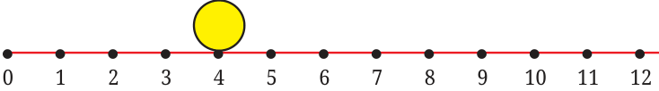
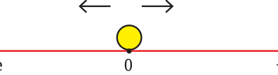
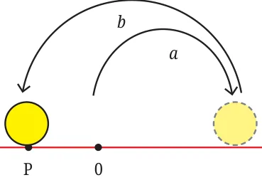
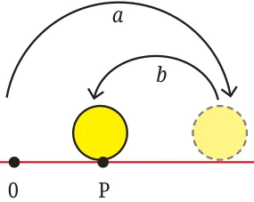
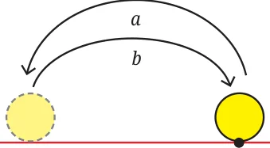
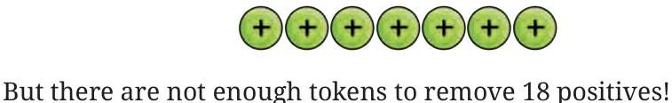
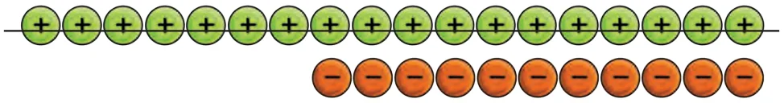

A carrom coin is struck to move it to the right. Each strike moves the coin a certain number of units of distance rightwards based on the force of the strike.

To begin with, the coin is at point 0. If the coin is struck twice, with the first strike moving it by 4 units and the second strike moving it by 3 units, what will be the final position of the coin?
It is clear that the coin will be \(4 + 3 = 7\) units from 0.
If the coin is struck twice, and if the two movements are known, can you give a formula for the final position of the coin? If the first strike moves the coin ‘a’ \(P = ^{a}^{+}^{b}\) units to the right and if the second b strike moves the coin ‘b’ units to \(^{a}\) the right, then the final position is \(P = a + b\), where P is the distance of the _{0} _{P} coin from the starting point 0.
Now, suppose the coin can be struck to move it in either direction - left or right.

- ve +ve
The coin is at 0. If it is struck twice (the direction of the two strikes may be the same or different) can you give a formula for the final position of the coin? One way to do this is to consider different cases of the directions of the strikes
- •both are rightward,
- •both are leftward,
- •the first one is rightward and the second one is leftward, and
- •the first one is leftward and the second one is rightward.
An efficient way to model this situation is to use positive and negative integers. First, let us model the line on which the coin moves as a number line.
- ve . . . \(- 5 - 4 - 3 - 2 - 1 0 1 2 3 4 5 6\) . . . +ve
Let us consider the rightward movement positive and the leftward movement negative. Suppose the first strike moves the coin rightward by 5 units from 0, and the second strike leftward by 7 units, then we take the First Movement \(= 5\) units. Second Movement \(= - 7\) units.
What is the final position of the coin? This can be found by simply adding the two movements: \(5 +\) ( \(- 7) = - 2\). So the coin is at \(- 2\), or it is 2 units to the left of 0. In general, if the first strike moves the coin ‘a’ units (which is positive if the strike is to the right and negative if the strike is to the left), and the second strike ‘b’ units (which is positive if the strike is to the right and negative if the strike is to the left), then the final position ‘P’, after the two strikes, is again \(P = a + b\).
Based on this new model, answer the following questions:
- 1.If the first movement is \(- 4\) and the final position is 5, what is the
- 2.If there are multiple strikes causing movements in the order 1, \(- 2\), 3,
\(- 4\), …, \(- 10\), what is the final position of the coin? By modeling the movements as numbers, both positive and negative, we are able to capture two pieces of information - the distance (magnitude) and the direction (rightwards or leftwards). For example, when we say the movement is \(- 4\), the magnitude is 4 and the direction is leftward.
From the figures below, what can you conclude about the magnitudes of a and b compared to each other, and what are their directions? Remember to start from 0. 1.

- ve +ve
2.

- ve +ve
3.

- ve +ve
In addition to the number line, we used the token model to understand integers. We used this model to perform addition and subtraction in Grade 6. Let us do a quick recall. We used green ( ) token to represent positive 1 and red ( ) token to represent negative 1, that is \(- 1\). Together they make zero, as they cancel each other out.
Find \((+7) - (+18)\).
To subtract 18 from 7, i.e., \((+7) - (+18)\), we need to remove 18 positives from 7 positives.

We put in enough zero pairs so that we can remove 18 positives. How many? We have 7 positives and we need 11 more. So we need to put in 11 zero pairs:
We can now remove 18 positives.

What is left? There are 11 negatives, meaning \(- 11\).
So, \(7 - 18 = - 11\).
We had also seen that subtracting a number is the same as adding its additive inverse.
Using tokens, argue out the following statements. Math Talk
- (a)\(7 - 18 = 7 +\) ( \(- 18)\) (additive inverse of 18 is \(- 18)\)
- (b)\(4 -\) ( \(- 12) = 4 + 12\) (additive inverse of \(- 12\) is 12)
Note to the Teacher: Tokens of different shapes may be used for positive and negative numbers for visually challanged students.
Additive inverse of an integer a is represented as \(- a\). So the additive inverse of 18 is represented as \(- (18) = - 18\), and the additive inverse of
\(- 18\) is represented as - ( \(- 18) = 18\).